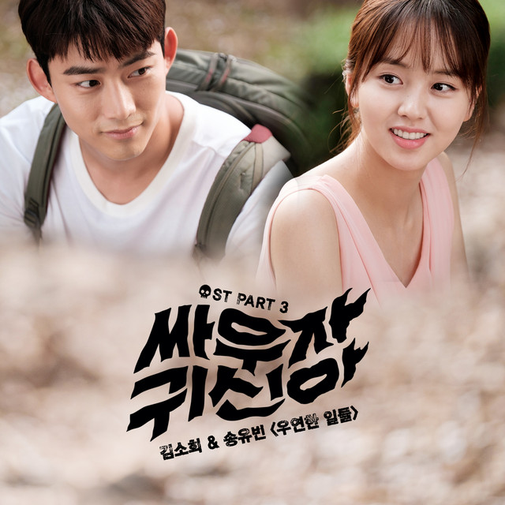
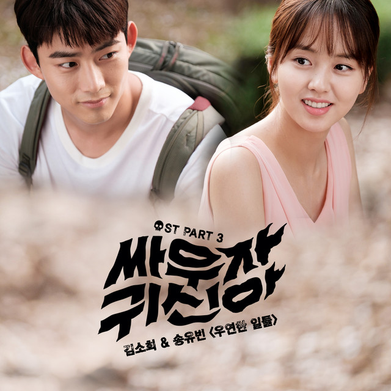

Biografi
Kim So-hyun adalah aktris asal Korea Selatan yang lahir pada 4 April 1999. Ia dikenal melalui berbagai drama dan film Kim So-hyun (Hangul: 김소현; Hanja: 金所炫) (lahir 4 Juni 1999) adalah aktris, pembawa acara, dan model asal Korea Selatan. Ia memulai kariernya sebagai aktris cilik ketika berusia tujuh tahun, dan mulai memperoleh kepopuleran pada tahun 2012 ketika ia memerankan calon ratu muda yang jahat dalam drama Moon Embracing the Sun, dan seorang gadis yang jatuh kedalam tragedi dalam melodrama tahun 2013 Missing You


Karya lainnya yang terkenal termasuk komedi hitam The Suspicious Housekeeper (2013), thriller misteri Reset (2014), drama remaja Who Are You: School 2015 dan Let's Fight Ghost (2016).drama sejarah The Emperor: Owner of the Mask (2017), komedi romantis Radio Romance (2018), drama berbasis webtoon Love Alarm (2019–2021), drama sejarah The Tale of Nokdu (2019) dan drama sejarah yang diangkat dari cerita rakyat River Where the MoonRises (2021). Dia juga pernah memandu acara musik MBC Music Core (2013-2015) dan survival reality show Under Nineteen (2019).

Ia telah memantapkan dirinya sebagai bintang Hallyu top, dan menjadi "Nation's First Love" berikutnya.Untuk penampilannya di River Where the Moon Rises, ia dinominasikan untuk Baeksang Arts Award untuk Aktris Terbaik - Televisi, menjadi salah satu nominasi termuda untuk penghargaan tersebut.
Dia secara konsisten mempromosikan karya televisinya di Instagram. Ia dianugerahi '2018 Most Grown Instagram Account' dengan 7,1 juta pengikut. Pada usia 21, Kim So-Hyun menjadi aktris Korea Selatan termuda yang memiliki lebih dari 10 juta pengikut di media sosial, bersama aktor Lee Min-ho. Pada tahun 2020, Forbes menyertakan dia dalam 100 bintang digital se-Asia '100 Digital Stars (Asia)' bersama Lee Min-Ho, Bae Suzy, Park Shinhye, dan lainnya.[16]


Filmografi
Beberapa karya terkenal Kim So-hyun antara lain:
- "Love Alarm" (2019)
- "School 2015" (2015)
- "The Tale of Nokdu" (2019)
- "Let's Fight Ghost" (2016)


 
